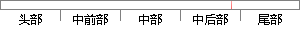

，所以在 进行 图像拼接 的第一步 需要进行图像
片段位置图

相似结果
相似片段：
、 图像融合 图像配准后，通过对配准图像重采样就可以进行图像的拼接。但由于图像灰度差异等原因，拼接后的图像很容易出现亮度差异和拼接接缝，所以在图像拼接后需要进行图像融合，使拼接后的图片看起来自然准确。下面本文将对图像拼接三个重要步骤做具体分析研究。 A图像预处理 通过硬件传感器获取到的模拟图像在转
| 对比库： | WriteCheck云资源库 |
| 来源： | blog.sciencenet.cn 查看来源 |
| 发布时间： | 2015-07-06 |
| 相似率 | 83.33% （严重抄袭） |